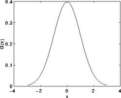

Smoothing Images
Goal
In this tutorial you will learn how to apply diverse linear filters to smooth images using OpenCV functions such as:
Theory
The explanation below belongs to the book Computer Vision: Algorithms and Applications by Richard Szeliski and to LearningOpenCV
Smoothing, also called blurring, is a simple and frequently used image processing operation.
There are many reasons for smoothing. In this tutorial we will focus on smoothing in order to reduce noise (other uses will be seen in the following tutorials).
To perform a smoothing operation we will apply a filter to our image. The most common type of filters are linear, in which an output pixel’s value (i.e. \(g(i,j)\)) is determined as a weighted sum of input pixel values (i.e. \(f(i+k,j+l)\)) :
\[g(i,j) = \sum_{k,l} f(i+k, j+l) h(k,l)\]\(h(k,l)\) is called the kernel, which is nothing more than the coefficients of the filter.
It helps to visualize a filter as a window of coefficients sliding across the image.
There are many kind of filters, here we will mention the most used:
Normalized Box Filter
This filter is the simplest of all! Each output pixel is the mean of its kernel neighbors ( all of them contribute with equal weights)
The kernel is below:
\[\begin{split}K = \dfrac{1}{K_{width} \cdot K_{height}} \begin{bmatrix} 1 & 1 & 1 & ... & 1 \\ 1 & 1 & 1 & ... & 1 \\ . & . & . & ... & 1 \\ . & . & . & ... & 1 \\ 1 & 1 & 1 & ... & 1 \end{bmatrix}\end{split}\]
Gaussian Filter
Probably the most useful filter (although not the fastest). Gaussian filtering is done by convolving each point in the input array with a Gaussian kernel and then summing them all to produce the output array.
Just to make the picture clearer, remember how a 1D Gaussian kernel look like?
Assuming that an image is 1D, you can notice that the pixel located in the middle would have the biggest weight. The weight of its neighbors decreases as the spatial distance between them and the center pixel increases.
Remember that a 2D Gaussian can be represented as :
\[G_{0}(x, y) = A e^{ \dfrac{ -(x - \mu_{x})^{2} }{ 2\sigma^{2}_{x} } + \dfrac{ -(y - \mu_{y})^{2} }{ 2\sigma^{2}_{y} } }\]where \(\mu\) is the mean (the peak) and \(\sigma\) represents the variance (per each of the variables \(x\) and \(y\))
Median Filter
The median filter run through each element of the signal (in this case the image) and replace each pixel with the median of its neighboring pixels (located in a square neighborhood around the evaluated pixel).
Bilateral Filter
- So far, we have explained some filters which main goal is to smooth an input image. However, sometimes the filters do not only dissolve the noise, but also smooth away the edges. To avoid this (at certain extent at least), we can use a bilateral filter.
- In an analogous way as the Gaussian filter, the bilateral filter also considers the neighboring pixels with weights assigned to each of them. These weights have two components, the first of which is the same weighting used by the Gaussian filter. The second component takes into account the difference in intensity between the neighboring pixels and the evaluated one.
- For a more detailed explanation you can check this link
Code
What does this program do?
- Loads an image
- Applies 4 different kinds of filters (explained in Theory) and show the filtered images sequentially
Downloadable code : Click here
Code at glance:
#include "opencv2/imgproc.hpp" #include "opencv2/imgcodecs.hpp" #include "opencv2/highgui.hpp" using namespace std; using namespace cv; int DELAY_CAPTION = 1500; int DELAY_BLUR = 100; int MAX_KERNEL_LENGTH = 31; Mat src; Mat dst; char window_name[] = "Smoothing Demo"; int display_caption( const char* caption ); int display_dst( int delay ); int main( void ) { namedWindow( window_name, WINDOW_AUTOSIZE ); src = imread( "../data/lena.jpg", IMREAD_COLOR ); if( display_caption( "Original Image" ) != 0 ) { return 0; } dst = src.clone(); if( display_dst( DELAY_CAPTION ) != 0 ) { return 0; } if( display_caption( "Homogeneous Blur" ) != 0 ) { return 0; } for ( int i = 1; i < MAX_KERNEL_LENGTH; i = i + 2 ) { blur( src, dst, Size( i, i ), Point(-1,-1) ); if( display_dst( DELAY_BLUR ) != 0 ) { return 0; } } if( display_caption( "Gaussian Blur" ) != 0 ) { return 0; } for ( int i = 1; i < MAX_KERNEL_LENGTH; i = i + 2 ) { GaussianBlur( src, dst, Size( i, i ), 0, 0 ); if( display_dst( DELAY_BLUR ) != 0 ) { return 0; } } if( display_caption( "Median Blur" ) != 0 ) { return 0; } for ( int i = 1; i < MAX_KERNEL_LENGTH; i = i + 2 ) { medianBlur ( src, dst, i ); if( display_dst( DELAY_BLUR ) != 0 ) { return 0; } } if( display_caption( "Bilateral Blur" ) != 0 ) { return 0; } for ( int i = 1; i < MAX_KERNEL_LENGTH; i = i + 2 ) { bilateralFilter ( src, dst, i, i*2, i/2 ); if( display_dst( DELAY_BLUR ) != 0 ) { return 0; } } display_caption( "End: Press a key!" ); waitKey(0); return 0; } int display_caption( const char* caption ) { dst = Mat::zeros( src.size(), src.type() ); putText( dst, caption, Point( src.cols/4, src.rows/2), FONT_HERSHEY_COMPLEX, 1, Scalar(255, 255, 255) ); imshow( window_name, dst ); int c = waitKey( DELAY_CAPTION ); if( c >= 0 ) { return -1; } return 0; } int display_dst( int delay ) { imshow( window_name, dst ); int c = waitKey ( delay ); if( c >= 0 ) { return -1; } return 0; }
Explanation
Let’s check the OpenCV functions that involve only the smoothing procedure, since the rest is already known by now.
Normalized Block Filter:
OpenCV offers the function cv::blur to perform smoothing with this filter.
for ( int i = 1; i < MAX_KERNEL_LENGTH; i = i + 2 ) { blur( src, dst, Size( i, i ), Point(-1,-1) ); if( display_dst( DELAY_BLUR ) != 0 ) { return 0; } }
We specify 4 arguments (more details, check the Reference):
- src : Source image
- dst : Destination image
- Size( w,h ) : Defines the size of the kernel to be used ( of width w pixels and height h pixels)
- Point(-1, -1) : Indicates where the anchor point (the pixel evaluated) is located with respect to the neighborhood. If there is a negative value, then the center of the kernel is considered the anchor point.
Gaussian Filter:
It is performed by the function cv::GaussianBlur :
for ( int i = 1; i < MAX_KERNEL_LENGTH; i = i + 2 ) { GaussianBlur( src, dst, Size( i, i ), 0, 0 ); if( display_dst( DELAY_BLUR ) != 0 ) { return 0; } }
Here we use 4 arguments (more details, check the OpenCV reference):
- src : Source image
- dst : Destination image
- Size(w, h) : The size of the kernel to be used (the neighbors to be considered). \(w\) and \(h\) have to be odd and positive numbers otherwise thi size will be calculated using the \(\sigma_{x}\) and \(\sigma_{y}\) arguments.
- \(\sigma_{x}\) : The standard deviation in x. Writing \(0\) implies that \(\sigma_{x}\) is calculated using kernel size.
- \(\sigma_{y}\) : The standard deviation in y. Writing \(0\) implies that \(\sigma_{y}\) is calculated using kernel size.
Median Filter:
This filter is provided by the cv::medianBlur function:
for ( int i = 1; i < MAX_KERNEL_LENGTH; i = i + 2 ) { medianBlur ( src, dst, i ); if( display_dst( DELAY_BLUR ) != 0 ) { return 0; } }
We use three arguments:
- src : Source image
- dst : Destination image, must be the same type as src
- i : Size of the kernel (only one because we use a square window). Must be odd.
Bilateral Filter
Provided by OpenCV function cv::bilateralFilter
for ( int i = 1; i < MAX_KERNEL_LENGTH; i = i + 2 ) { bilateralFilter ( src, dst, i, i*2, i/2 ); if( display_dst( DELAY_BLUR ) != 0 ) { return 0; } }
We use 5 arguments:
- src : Source image
- dst : Destination image
- d : The diameter of each pixel neighborhood.
- \(\sigma_{Color}\) : Standard deviation in the color space.
- \(\sigma_{Space}\) : Standard deviation in the coordinate space (in pixel terms)
Results
The code opens an image (in this case lena.jpg) and display it under the effects of the 4 filters explained.
Here is a snapshot of the image smoothed using medianBlur :